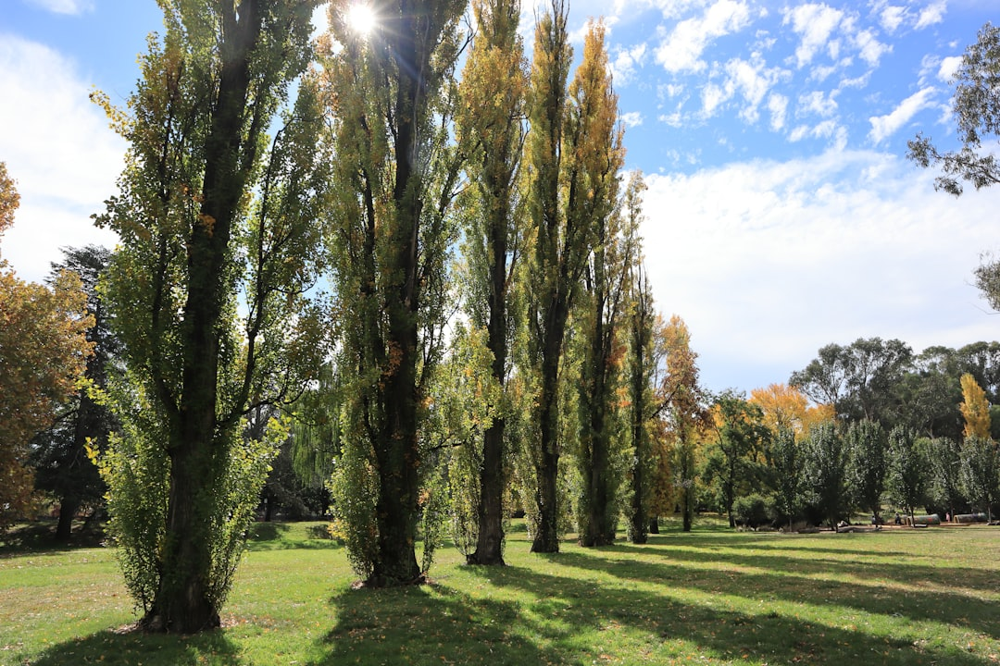

For homeowners comparing tree removal canberra options, the practical question is whether removal, pruning, stump work or an assessment best fits the tree, the site and ACT protected tree rules.
Tree Removal Canberra Explained
Top Tree Removal Canberra frames the decision as a planning exercise, not a rush to cut. The source guide separates tree condition, ownership, protected status, access, nearby assets, stump work and waste, because those facts change what a provider can sensibly put in writing.
Removal may suit a dead, structurally compromised or unsuitable tree, but the guide also keeps pruning, deadwooding, arborist assessment, storm damage triage, stump grinding and hedge maintenance in view. That matters for a Canberra property owner because the desired outcome may be clearance, risk assessment, reuse of the ground, canopy management or a make safe response after damage.
A useful enquiry should show more than the tree itself. Whole tree photos, trunk photos, the access path, fences, roofs, visible lines, slope and the intended finish help turn a vague request into a written scope. A related planning note is available in this Canberra tree work guide.
Who this applies to
This guide applies to private property owners or occupiers trying to decide what to ask before arranging major work. It is also relevant when a person is unsure whether a tree is private, public or protected, because the source guide treats status checking as a step before authorising removal or major pruning.
- Use it when the tree may need removal, selective pruning, deadwood work or an arborist assessment.
- Use it when stump grinding, log removal, mulch, backfill or clean up needs to be included in the quote.
- Use it when nearby roofs, fences, services, narrow access or slope could affect the method.
- Use it when storm damage or a fallen tree creates an urgent triage question.
It does not replace provider level proof. The published guide says qualifications, insurance, memberships and availability belong to the actual operator being considered, and should be confirmed before work proceeds.
ACT status checks before major work
The ACT specific part of the decision is ownership and protected status. The source guide states that all public trees are protected. It also says a private tree may be protected under the Urban Forest Act 2023, including by size, registration or other qualifying conditions, and that a dead native tree can still require care in the status check.
For private trees, the guide points readers to current City Services tests and ACTmapi before arranging major work. For public trees, it says residents must not prune or remove street trees themselves. That is enough to shape the first conversation with a provider: has ownership been confirmed, has protected status been checked, and does the written scope assume an approval step?
Where protected status is uncertain, the safer enquiry is not a price request. Ask what evidence the provider needs to assess the route, whether an arborist assessment is appropriate, and what information should be gathered before any removal or major pruning is authorised.
What changes the written scope
A quote comparison is only useful when each provider is responding to the same job. The source guide recommends putting method, approvals, credentials, insurance, inclusions, exclusions and site repair in writing. That turns the decision from a lowest number exercise into a comparison of what is actually included.
The practical variables are visible on site. Access width may affect equipment and removal method. Nearby roofs, fences and services may affect rigging and protection. Stump work needs its own words, including whether grinding is included, what happens to grindings, and whether backfill is expected before the area is reused.
Waste also needs to be named. A scope can treat logs, mulch and final clean up differently, so the reader should not assume those items are included unless they appear in writing. For pruning, the guide favours selective work for deadwood, clearance or canopy objectives rather than indiscriminate lopping.
Questions to ask before accepting
The most useful questions are specific to the tree and site, rather than generic promises. Ask whether the provider has seen enough photos to comment on method, whether public or protected tree issues change the route, and whether stump, waste and clean up are included.
- Has ownership been confirmed as private or public land?
- Has protected status been checked using current ACT guidance?
- Is the proposed work removal, pruning, assessment, stump grinding or urgent make safe work?
- What nearby assets, visible lines, slope or access limits affect the method?
- What proof of qualifications, insurance and availability will the actual operator provide?
If the answer is uncertain, ask for the uncertainty to be written into the scope. A clear exclusion is better than discovering after acceptance that stump grinding, green waste, access repair or approval work was never part of the offer.
- Confirm ownership. Work out whether the tree is on private land or public land before arranging major work.
- Check protected status. Use current ACT guidance and ACTmapi where relevant before authorising removal or major pruning.
- Record site constraints. Photograph the whole tree, trunk, access path, nearby roofs, fences, visible lines and slope.
- Separate inclusions. State whether removal, pruning, stump grinding, logs, mulch, backfill and final clean up are included.
- Compare written scopes. Ask each provider to confirm method, approvals, proof, inclusions, exclusions and site repair in writing.
| Situation | Likely route to discuss | Scope detail to confirm |
|---|---|---|
| Dead, compromised or unsuitable tree | Removal or arborist assessment | Protected status, access, nearby assets, stump and waste |
| Deadwood or clearance objective | Selective pruning | Canopy objective, extent of pruning and green waste |
| Ground needs reuse after a tree is gone | Stump grinding | Grinding depth, surface roots, grindings and backfill |
| Storm damaged or fallen tree | Urgent tree work | Make safe scope, electrical hazards and provider availability |
This guide covers ACT tree work planning, protected status checks, written scope inputs and quote comparison questions for Canberra property owners.